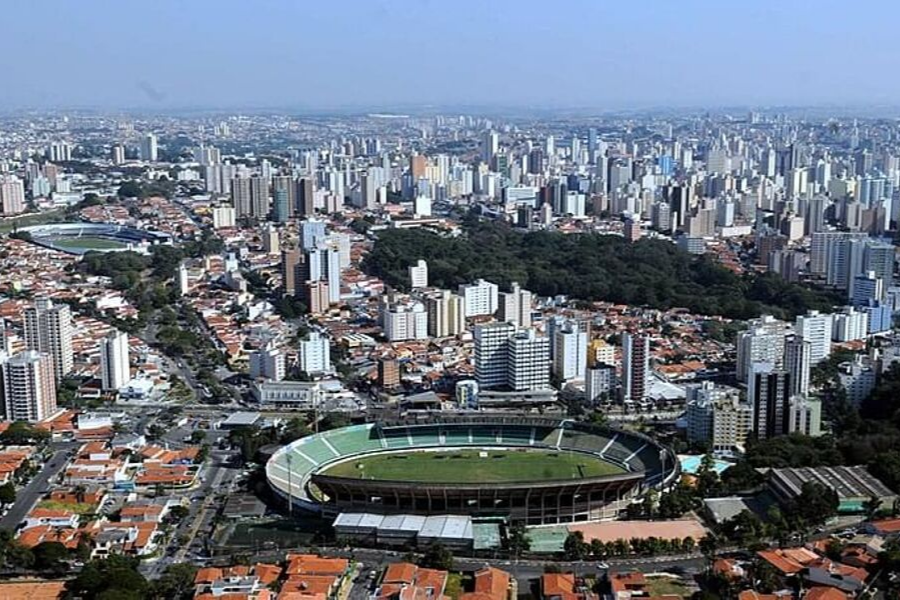

Campinas é uma das cidades mais importantes do interior de São Paulo, conhecida por seu papel fundamental no desenvolvimento tecnológico, científico e industrial do Brasil. Além de abrigar universidades renomadas como a Unicamp, a cidade se destaca por ser um polo de inovação e por sua contribuição significativa para a economia nacional. Seu crescimento urbano e cultural reflete a diversidade de oportunidades que oferece para moradores e visitantes.
No turismo, Campinas conta com atrativos como o Parque Portugal (conhecido como Lagoa do Taquaral), a Torre do Castelo e o Bosque dos Jequitibás, que são opções bastante visitadas por moradores e turistas. A cidade também possui passeios gratuitos como parques, praças e feiras de artesanato, que revelam a cultura e o estilo de vida local.
A economia de Campinas é forte e diversificada, com destaque para os setores de tecnologia, telecomunicações, educação e agronegócio. Graças a esse dinamismo, a cidade se tornou referência em inovação e qualidade de vida. Na gastronomia, Campinas oferece desde restaurantes sofisticados até comidas típicas de feira, com destaque para os pastéis e caldos de cana.
Uma curiosidade interessante é que Campinas é considerada a “capital do interior paulista” por sua influência regional e cultural. Além disso, possui uma das maiores redes de pesquisa tecnológica do Brasil, o que faz dela um centro de atração para estudantes e profissionais do país inteiro. Essa mistura de tradição, ciência e lazer torna a cidade única no estado de São Paulo.
